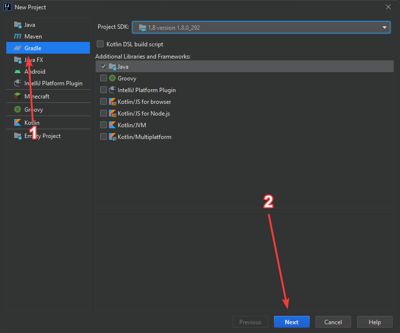
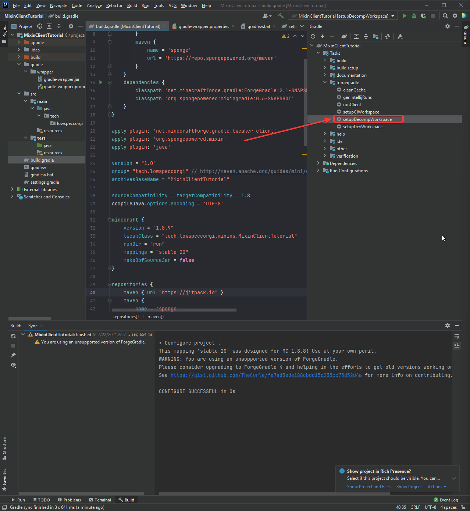
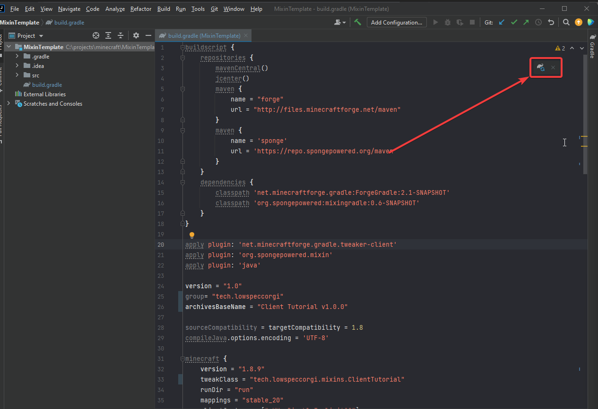
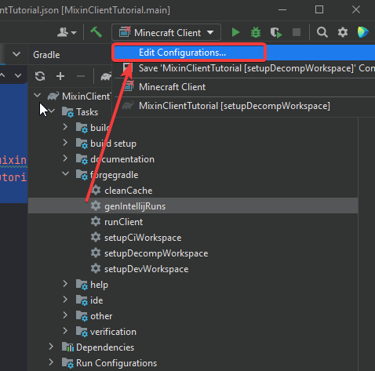
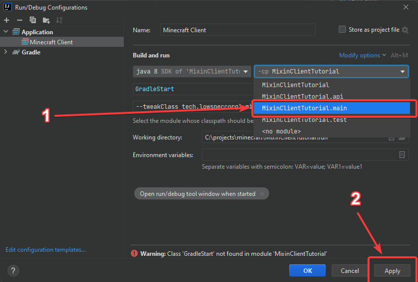
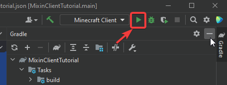

2 | Setting up
Creating a new project
Click the create new project button on IDEA

Go through the dialog setting options as you please, until you can create your project
Customizing the template
Build.gradle
So now we need to convert this from a template to your own project
First open build.gradle, and paste the code from here to your build.gradle
I want you to decide on the following things
- A project name
- The name of your client
- A group name
- This is a top level layout of your package structure, please read here if you do not understand what it is
Now you must do the following things
- Go to line 25 and change the word
GROUP_NAMEto whatever you have decided your group name to be - Go to line 26 and change the word
BASE_NAMEto whatever you have decided for your project name to be - Go to line 33 and change the word
GROUP_NAMEto your group name, and the wordPROJECT_NAMEto your project name + the wordTweaker(Ie: MixinClientTutorialTweaker) - Go to line 67 and change the word
PROJECT_NAMEto your project's name - Go to line 91 and change the word
PROJECT_NAMEto your project'sname - Lastly, go to line 92 and change the word
GROUP_NAMEto your decided group name, and changeTWEAKER_NAMEto your project's name + the wordTweaker
View the an example of a customized build.gradle here
Little gradle fix
Open the file gradle-wrapper.properties
project
-> gradle
-> wrapper
-> gradle-wrapper.properties <-- Open this file
It should look roughly like this
1 2 3 4 5 | |
Where the line distribution is, change the distributionUrl so the version is 4.7, like so:
1 2 3 4 5 | |
This will take a bit of time, so just wait for it to download and install gradle
Mixin file
Create the file mixins.PROJECT_NAME.json, with the word PROJECT_NAME replaced with the project name that you decided on earlier, in the folder src/main/resources
project
-> src
-> main
-> resources
-> mixins.PROJECT_NAME.json <-- Create this file
In that file, add the content:
Note
Replace all instances of GROUP_NAME with our group name
And all instances of PROJECT_NAME should be replaced with your project name
1 2 3 4 5 6 7 8 | |
For example, if my group ID was tech.lowspeccorgi, and my project name was MixinClientTutorial, I would customise the *.json refmap file like so
1 2 3 4 5 6 7 8 | |
I will explain this file later, but for now we don't need to know much about it
Finishing off
Creating the skeleton
Remember the group ID seperated by dots you had?
In the java folder outlined below, create a folder structure seperated by dots, with your project name, and a mixins folder
project
-> src
-> java <-- Go here
For example, if my group ID was tech.lowspeccorgi, and my project name was MixinClientTutorial, I would create a folder structure like so
project
-> src
-> java
-> tech
-> lowspeccorgi
-> mixinclienttutorial
-> mixins
Configuring the project
Now you can run the task :setupDecompWorkspace

This will take some time
Next click the elephant reload button to get gradle to configure your project

Generating run configurations
In the same sidepanel where you pressed setupDecompWorkspace, you should see a button entitled genIntelijRuns, click that to run the :genIntelijRuns task
After that is done, click the edit configurations button

Then change the module to PROJECT_NAME.main, and click apply

You can now run the project by clicking the green run button
Error
This won't work for now as we don't have a Tweaker, but I will get to that next tutorial

How can I get help, ask questions, etcetera?
The easiest way is to join my Discord server, which you can find here https://discord.gg/45RhZT5e9Z